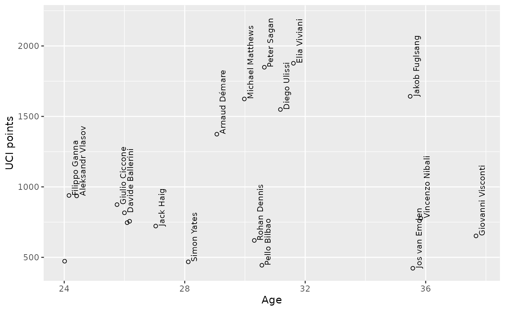

example-top-riders.RmdData set for this example was created by R/examples/example.giro.2020.R script. Riders starting Giro d’Italia 2020 are covered, including their results in 2019 and 2020 seasons.
Pick top 20 riders who collected most UCI points since the start of previous edition of the race. Calculate riders’ age on start of Giro 2020.
uci_points_on_start <- rider_records_giro2020 %>% subset(date < '2020-10-03') %>% subset(date >= '2019-05-11') %>% group_by(rider) %>% summarise(pointsuci = sum(pointsuci, na.rm = TRUE)) riders_age_points <- rider_profiles_giro2020 %>% mutate(age = as.double(difftime('2020-10-03', dob, units = 'weeks') / 52.25)) %>% left_join(., uci_points_on_start, by = "rider") %>% arrange(desc(pointsuci)) %>% head(n = 20)
Plot collected UCI points by riders’ age:
riders_age_points %>% ggplot() + aes(x = age, y = pointsuci, label = rider) + ylim(NA, 2200) + geom_text(check_overlap = TRUE, size = 3, angle = 90, vjust = "top", hjust = "left", nudge_x = 0.1) + geom_point(shape = 1) + labs(y = "UCI points", x = "Age")
